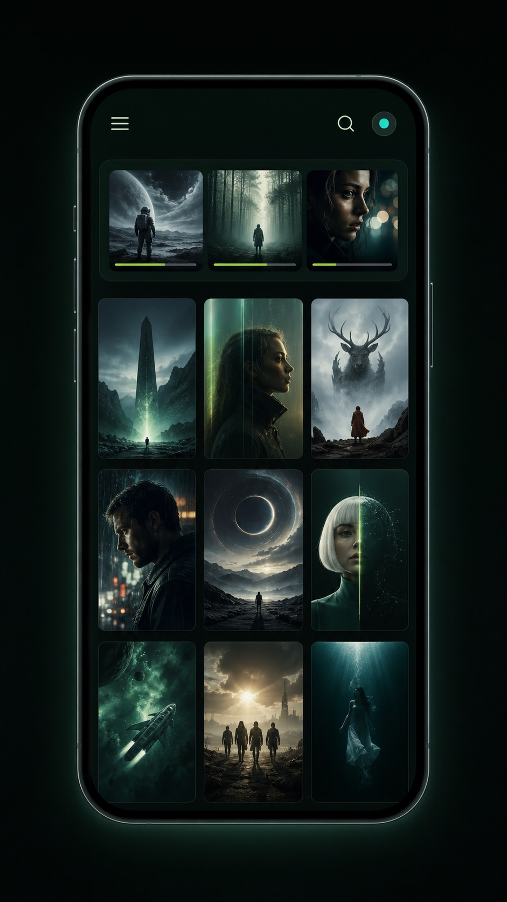

Windows 小主机 / 笔记本
如果已有可接电视的电脑，TinyPlay 是把它变成客厅播放器的一种方式。
GETTING STARTED
无论你已经在用 NAS，还是只想播放电脑里的一个文件夹，都能很快让 TinyPlay 跑起来。先找到和你当前情况最接近的一项。

它不是播放文件的必需条件：直接浏览文件夹更快。但接入 Emby、Jellyfin 或 Plex 后，TinyPlay 可以按封面浏览内容，并提供剧集、搜索和继续观看等信息。
概念示意图；实际界面以产品截图为准。ALREADY HAVE A SERVER
如果你的 NAS 或电脑上已经在运行 Emby、Jellyfin 或 Plex，不需要额外准备：打开 TinyPlay，在“添加内容源”中选择对应类型，填入地址、端口与账号即可。媒体库会照常以海报墙形式呈现，选集、搜索、最近观看与续播都会正常工作。
如果你使用的是极空间，其自带的媒体服务功能兼容 Emby 接口协议，添加内容源时选择「Emby」类型即可。
PLAY FILES DIRECTLY
如果你暂时不打算搭建媒体服务器，可以直接添加本地文件夹、已挂载目录、SMB 或 WebDAV 共享。连通后，用手机浏览并选择要作为起点的文件夹；之后就能按目录浏览和播放。遥控器照常支持暂停、进度、字幕、音轨和倍速，只是没有海报、剧集信息与续播记录。
选择「本地文件夹」，再在目录选择器里浏览这台 Mac 上的文件夹；也可以先用「访达 → 前往 → 连接服务器」挂载 NAS 共享后再选择它。
选择「SMB 共享」，填写共享地址与账号密码；连接成功后，直接在 TinyPlay 中选择要浏览的共享和文件夹。
选择「本地文件夹」，再在目录选择器里浏览任意磁盘；也可以先在“此电脑”中映射网络驱动器，再选择映射后的目录。
选择「SMB 共享」，填写共享地址与账号密码；连接成功后，在 TinyPlay 中选择共享和起始文件夹，无需先映射驱动器。
WANT A MEDIA LIBRARY
如果你想要完整的媒体库海报墙、剧集选集与续播体验，最简单的办法是先搭建一个媒体服务器，再用 TinyPlay 连接它。
完全免费开源，官方提供一条命令即可运行的 Docker 镜像，中文资料与社区齐全，且无需注册海外账号，在国内网络环境下也能正常使用。群晖、威联通、极空间等主流 NAS 系统大多也已提供一键安装的 Jellyfin 套件。搭建完成后，在 TinyPlay 中选择「Jellyfin」类型添加内容源即可。
LIVING-ROOM GUIDE
没有绝对的赢家，只有不同的取舍。先看你已有的设备和最常做的事，再决定是否需要添置新设备。
| 维度 | Windows 小主机 / 笔记本 | M 芯片 Mac mini | Apple TV 4K | 本地影音播放器（如芝杜） |
|---|---|---|---|---|
| 核心定位 | 可扩展的电脑播放器 | 电脑 + 播放器 | 流媒体盒子 | 本地影视专机 |
| 下载 / Docker | 可用 | 可用 | 不适合 | 不支持 |
| 本地媒体 / NAS | 软件与格式选择多 | 软件选择多 | 通常依赖第三方 App | 本地播放是主场 |
| 流媒体 | 浏览器与桌面 App | 浏览器与桌面 App | 开箱即用 | 能力因应用而异 |
| 高清音频直通 | 看硬件、系统和设置 | 不以源码直通见长 | 不以本地高清直通见长 | 看型号与音频格式 |
| HDR / 杜比视界 | 看显卡、系统与播放器 | 支持 HDR，具体能力看片源 | 流媒体体验省心 | 本地影片体验看型号 |
| 维护成本 | 中到高 | 中 | 低 | 低到中 |
| 最适合 | 已有电脑，希望自由配置 | 希望保留完整电脑体验 | 流媒体优先、全家省心 | 本地影片优先，偏好专机 |
如果已有可接电视的电脑，TinyPlay 是把它变成客厅播放器的一种方式。
播放、浏览、工作和家庭服务兼顾，适合想保留完整电脑体验的人。
适合主要观看流媒体、希望全家上手简单的人。
适合把本地影视播放作为主要用途、偏好独立影音设备的人。
实际 HDR、Dolby Vision 与音频能力会随芯片、操作系统、驱动、播放器、片源封装和影音设备而变化，购买前请以具体设备规格为准。
下载 TinyPlay，几分钟内就能把那台小主机接管电视。